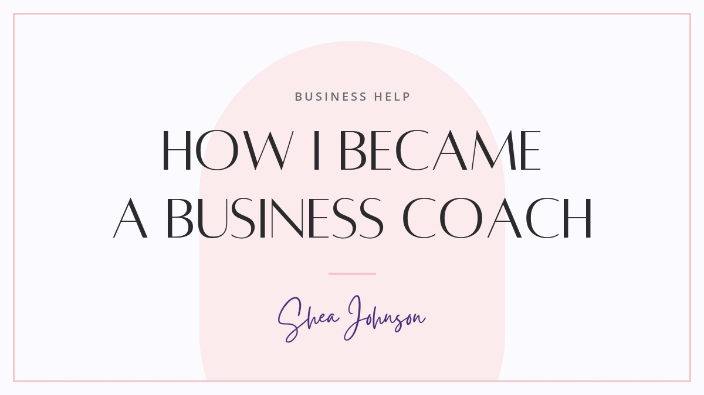

Update: I've since stepped away from government contracting to focus on creating.
I couldn’t figure out what I wanted my career to be for the longest time.
Even today…
My to-do list, my “do not forget” list, and my bucket list may take years to crunch through.
But I’m grateful to say — I’ve been able to do most of the things I wanted to do in my life.
I think the big question isn’t who I help — but how do I help them?
I teach small businesses and government agencies how to use AI tools.
But what does that actually look like?
At first, I was working with business owners one-on-one.
But it’s always been my dream to work from anywhere in the world and have financial freedom.
And I know that’s no reason not to do one-on-one — but hear me out.
First things first — I love what I do.
I love helping people.
I love the transformation they receive from working with me.
But I found myself trying to solve every problem while simultaneously becoming a therapist, business coach, life coach, personal assistant… etc. etc.
And I started to feel burnout.
It made me question whether or not this was for me.
The truth is — this is for me.
But how I deliver my value truly matters.
So how did I become a small business coach?
It happened by accident. I swear.
It all came from me bootstrapping.
Getting on Google.
Using YouTube University every time I needed to learn something for my own startups.
Each time I started a new business, I got better and better at learning what I needed to do in the different areas of the business wheel of life.
I started several nonprofits.
One of them — Boston Wealth Institute Inc. — I am the Founder of.
One day, a best friend of mine said to me:
“Shea, I think you should help people with their businesses. Many people are starting businesses nowadays, and you know a lot about the startup process.”
At first, I was like, “No, I don’t think I want to do that…”
But what happened was — from one phone call to the next — I began sharing very concrete advice.
First with friends and family.
Then with strangers from all over the world.
And here I am today.
Confident now.
Believing in myself enough to take my show on the road.
When it came to government contracting — I heard about the industry a long time ago.
And I gave up on it many times.
I did all the paperwork to get certifications.
I was on SAM.gov while they were transitioning and making major changes.
I did every form you could think of — all of this lasting for months and months.
Getting on Google every time it was time to do something.
And one day I felt hopeless.
I took a break and said to myself, “I think this is too big and too hard for me to do.”
I only needed a capabilities statement.
And when I went on Fiverr to see if I could hire someone to create it — it was a little over $200.
I didn’t have the money.
I felt defeated.
But two things happened.
A phone call from a company who wanted to offer me their GovCon services.
And the explosion of AI.
The phone call was from a woman who was extremely impressed by all the work I had done on my own.
I remember her raving and ranting.
At some point, she asked if I wanted to work for their company.
She told me people pay them $14,000–$20,000 a year to do what I had done for myself.
And before reaching out to me, they were sure I had hired and worked with a company before.
But I explained — I did all that work myself.
The reason I didn’t have any active contracts was because I was a one-woman show.
I had experienced a lot of burnout.
It was becoming a lot on my shoulders.
Yet…
I hung up the phone feeling empowered.
All the work I had done — someone had just told me how incredible I was.
And that motivated me to keep pushing.
Fast forward to 2023 — the AI explosion.
I found myself revisiting government contracting again.
This time with the help of AI.
And I was absolutely blown away.
Not only by what others were doing for themselves with AI — but by what I was beginning to do with it myself.
I completed that capabilities statement with the help of YouTube University and mentorship.
And now?
I’ve taken myself — in both small business and government contracting — further than I’ve ever been before.
Anyone who knows me personally knows why I work the way I do.
I am the eldest of my siblings.
My parents were very young when they had me — about 18 and 19 years old.
Anyone who is the eldest knows how hard that can be.
And anyone who is the product of a teen pregnancy knows how hard that can be as well.
Every day I fight for my life.
To be successful.
To achieve the dreams that live inside of me.
I think it’s a very brave thing for a young mother to trust God and keep her child when everyone around her believes she’s too young to raise one.
I believe my life is a very special gift.
It was hard to see it that way at first.
But I’m so grateful that I finally did.
When I get old, I want to be able to take care of my parents.
And especially my beloved Nana — who stepped in to help those two teenagers when they had me.
I also love to inspire people.
To help them see things from a better perspective.
So that they too can have a good quality of life — the way I’m learning to do.
I’m on most platforms as @MsSheaJohnson.
And I put out content, resources, and lessons from the business world that I’ve personally created just for you.
Hope to see you there.
Visit mssheajohnson.com and subscribe so you never miss what I'm creating next.
Until next time…
Best,
Shea